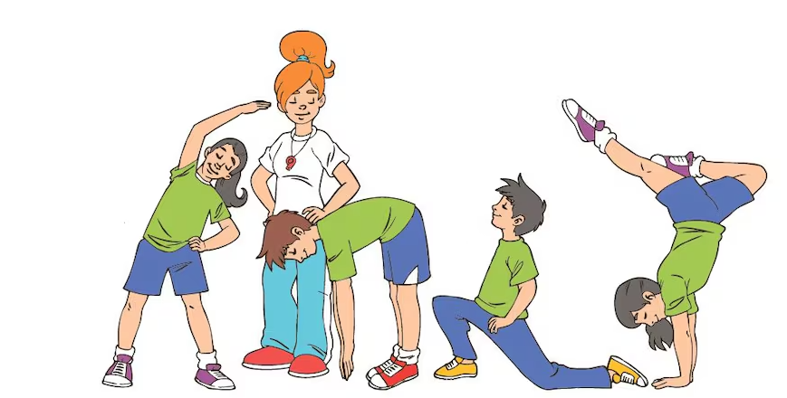
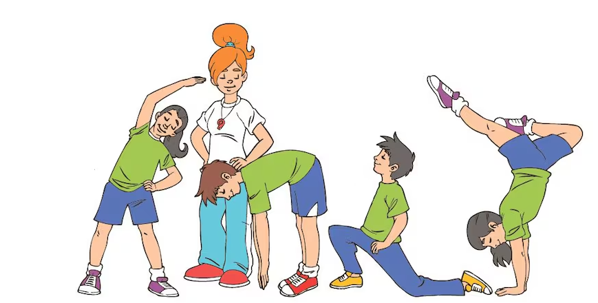

¡Bienvenidos!
Hoy hablaremos sobre las capacidades físicas, las cuales son necesarias para nuestro bienestar y rendimiento.
¡Vanos a ello!

¡Bienvenidos!
Hoy hablaremos sobre las capacidades físicas, las cuales son necesarias para nuestro bienestar y rendimiento.
¡Vanos a ello!
Mejorar el rendimiento físico del cuerpo humano, optimizando sus capacidades motoras y funcionales para facilitar la realización de actividades cotidianas y deportivas. Esto se logra a través del desarrollo de la fuerza, la resistencia, la flexibilidad, la velocidad y la coordinación, promoviendo una mejora integral en la salud, el bienestar y el rendimiento atlético.
-Mejorar la coordinación motriz gruesa: Desarrollar la capacidad de realizar movimientos amplios y coordinados con las grandes musculaturas del cuerpo, como caminar, correr o saltar, para aumentar la fluidez y precisión en actividades físicas y deportivas.
-Incrementar el equilibrio estático y dinámico: Potenciar la capacidad de mantener el control corporal y la estabilidad tanto en posiciones estáticas como dinámicas, favoreciendo la ejecución de movimientos complejos y mejorando el rendimiento en actividades que requieren equilibrio, como la gimnasia, el fútbol o el baloncesto.
Obra publicada con Licencia Creative Commons Reconocimiento Compartir igual 4.0